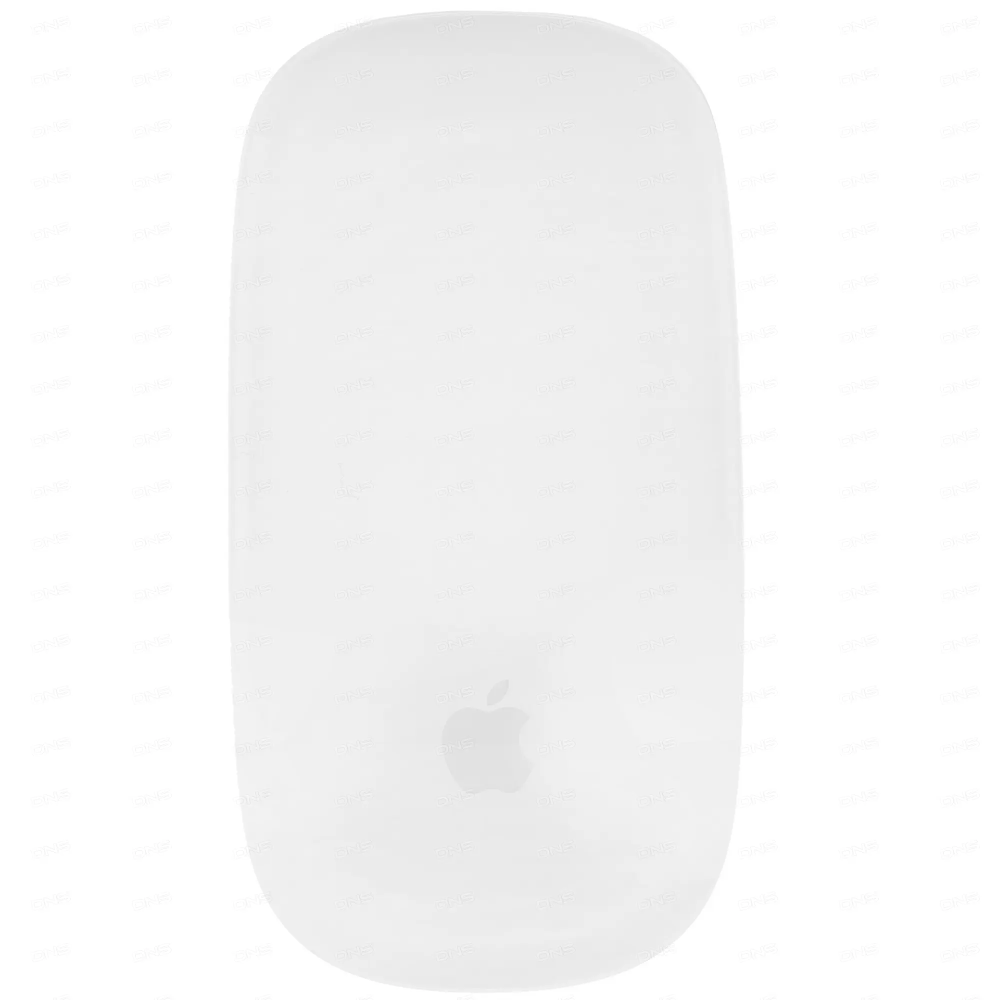
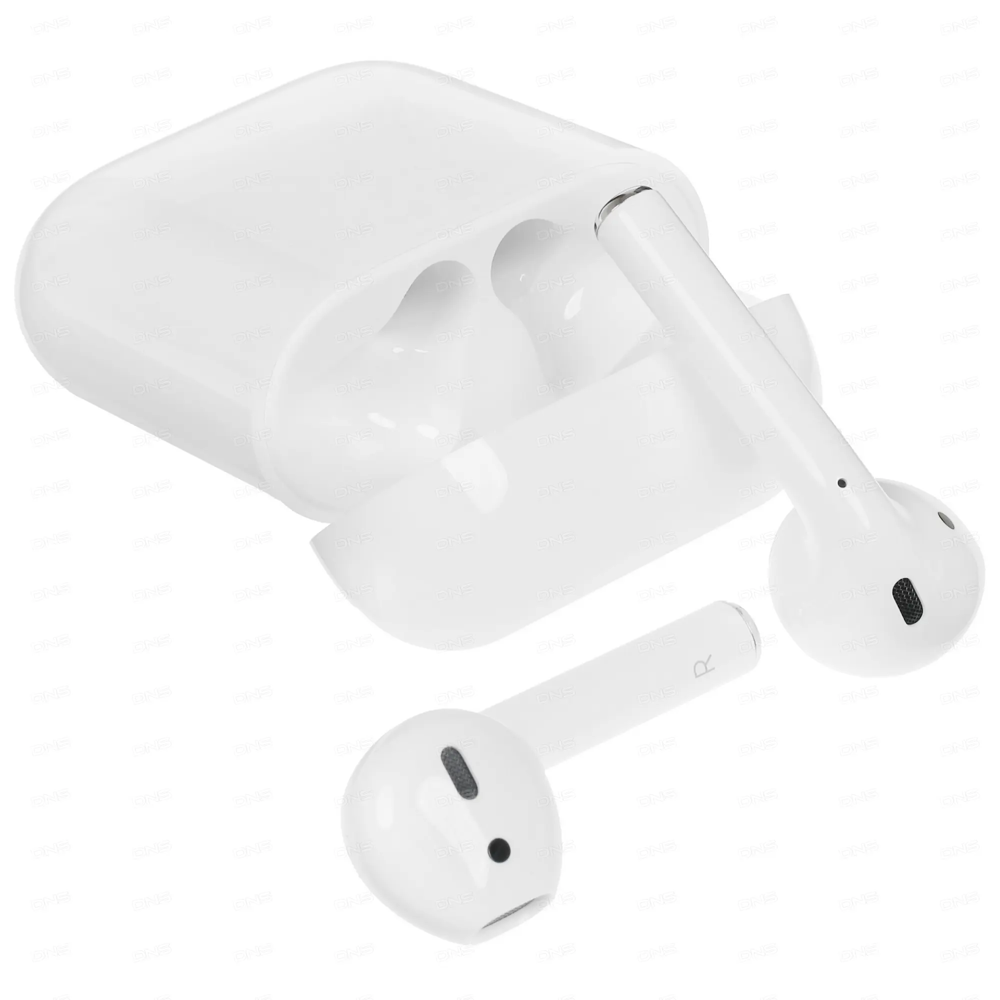
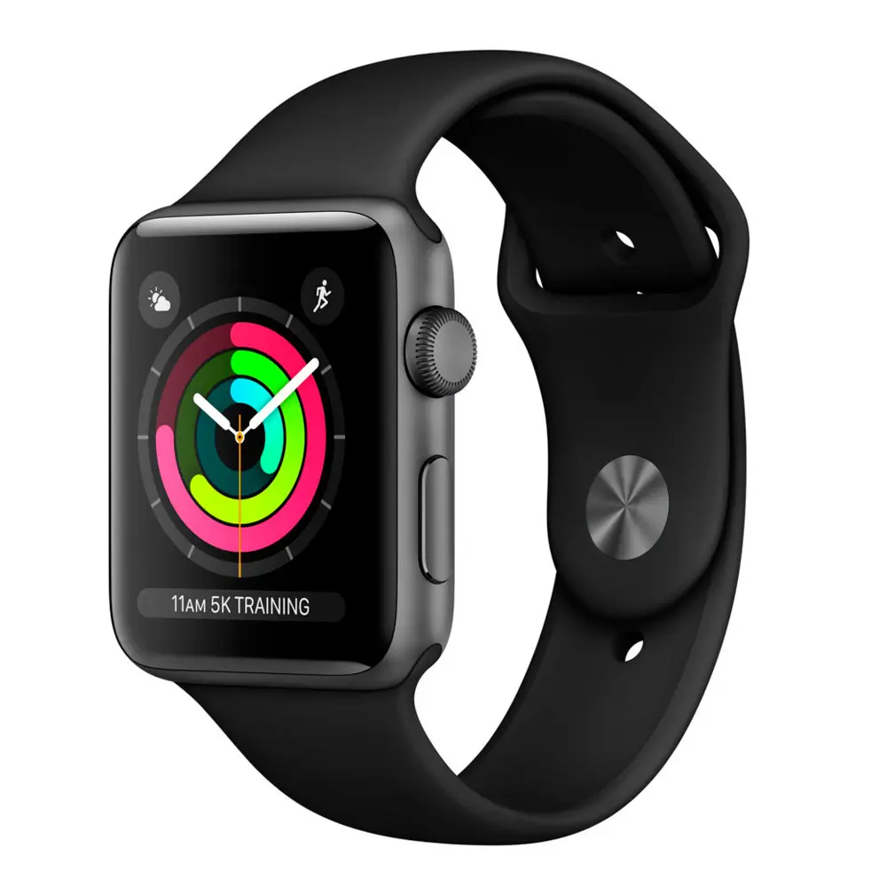

"Apple MacBook Air"129 399 ₽

"Apple Magic Mouse"7 999 ₽

"TWS Apple Airpods 2"10 499 ₽

"Apple Watch Series 3 42mm"15 099 ₽
Apple
История бренда Apple началась больше 40 лет назад. Из гаражного кооператива затея Стива Джобса стала одной из самых прибыльных корпораций в мире. Смартфоны и планшеты бренда задают модные тенденции всем остальным производителям и держат их в тонусе. В 1977 году вышел первый компьютер, который стал доступен для массового использования, а не только для инженеров и технических гениев. Это был Apple II. Он сразу стал гораздо популярнее своего предшественника Apple I. Справедливо будет заметить, что именно он дал возможность Рональду Уэйну и Стиву Джобсу заработать на изобретение Apple II. Следующее революционное «детище» компании – Macintosh. Он имел достаточно компактный моноблок с графическим интерфейсом и предустановленные программы для работы. После конфликта Стив Джобс ушел из компании и вернулся в нее только спустя 13 лет (1998 г). Однако это было революционное возвращение. Вместе с дизайнером Джони Айвом Джобс разработал и создал первый iMac. Этот компьютер был не только функциональным, но и красивым, что на тот момент было недосягаемой мечтой для пользователей. 2007 год также стал «прорывным» в истории компании. Тогда вышел iPhone. Это был первый смартфон с емкостным экраном и операционной системой iOS. Он произвел нешуточный фурор среди пользователей. Сегодня компьютеры Mac, iPad и iPhone являются эталонами для других производителей. Мы уверены, что новые технические революции не за горами!